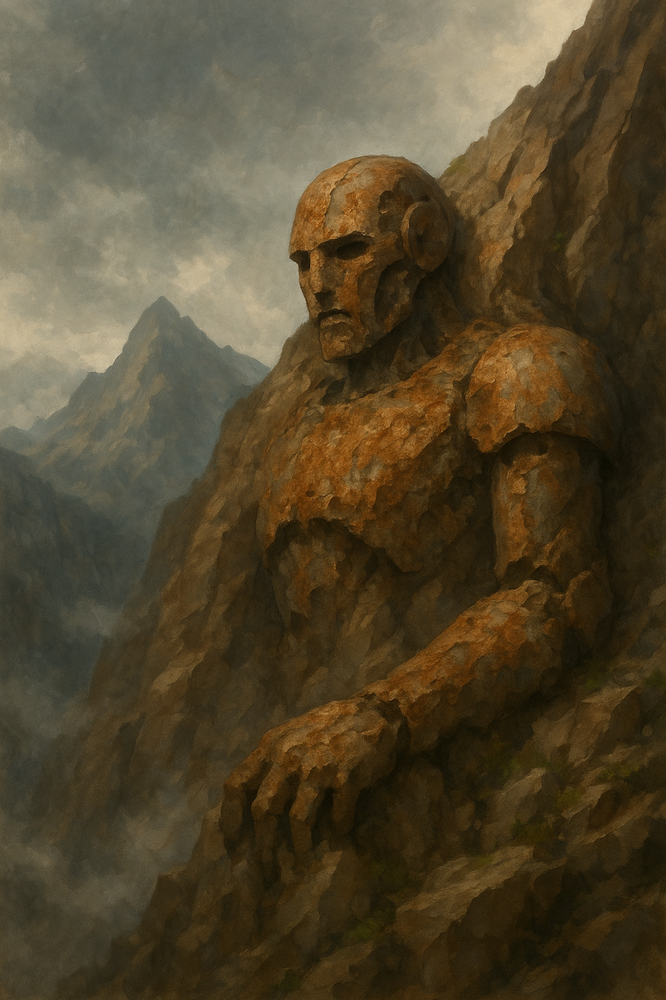

✦ Le Refuge, le Serment et la Glyphe ✦
De retour dans le sanctuaire de Sigil, la Cité des Portes, Sandro et Kora décident d'étudier de plus près le mystérieux ouvrage dissimulant un compartiment secret. Intrigués, ils forcent le mécanisme, mais déclenchent par mégarde un piège dormant : un gaz empoisonné se répand dans la pièce, provoquant l’irruption immédiate d’Alustriel, leur hôte, en état d’alerte.
Une fois le danger dissipé, les deux compagnons découvrent le véritable contenu : le journal de bord du Zéphir Flamboyant, la nef céleste, et les mémoires de sa capitaine, la déva. Kora prend la potion scellée dans le coffret tandis que Sandro s’empare des documents pour les étudier en profondeur.
Apprenant par ailleurs le souhait de Mardouk de suivre la voie des preux, les héros décident de profiter d’une semaine de répit pour se consacrer à leurs affaires personnelles, avant que les vents de l’aventure ne les emportent à nouveau.
À Pasdhiver, sous les voûtes sacrées du Temple de Torm, Mardouk fait ses premiers pas sur le chemin de la lumière. Présenté avec solennité sous l’œil vigilant — et parfois inquisiteur — de Baltus, il est introduit en grande pompe comme paladin stagiaire. Sa formation débute dans l’ombre des statues de héros tombés, tandis que les cloches résonnent comme un écho à ses doutes et à sa foi naissante.
Non loin, au cœur d’une tour d’étude silencieuse, Sandro plonge dans les arcanes avec l’obsession de tout mage en quête de singularité. Là, entre les grimoires anciens et les bougies consumées, il esquisse les premiers traits de sa glyphe personnelle — une signature magique destinée à marquer son œuvre. Il entreprend également le tutorat d’une apprentie, transmettant à son tour des secrets que peu osent confier.
Mais c’est dans le quartier du Lac Bleu, entre l’eau claire et les senteurs de bois mouillé, que naît un véritable sanctuaire : La Retraite du Chêne. Kora, fidèle à son lien avec les esprits sylvestres, transforme sa demeure en refuge pour les animaux blessés ou oubliés.
Un bassin limpide accueille les créatures aquatiques, tandis qu’une volière ouverte offre aux oiseaux un abri libre.
Ainsi, entre les mystères révélés à Sigil et les fondations posées à Pasdhiver, les héros tracent leurs chemins : de la lumière naissante à la magie affirmée, en passant par l’harmonie sauvage. Chacun à sa façon, ils se préparent — car le calme, en ces terres, ne dure jamais.
Après une première semaine de festivités, de prières et de bénédictions, le groupe se réunit à nouveau à Sigil. Le temps des célébrations cède la place à celui des quêtes, car une nouvelle destination les appelle : la recherche du troisième fragment de la Baguette des Sept Parties.
Avant le départ, quelques objets leur sont remis. Kora et Baltus reçoivent chacun un sac sans fond, symbole de confiance et d’anticipation. Kora, désormais plus mélancolique, y range deux années de provisions — prudence née de l’annonce des terres d’Oberron, inhospitalières et hantées de périls. Son caractère ardent semble s’être enveloppé du voile de l’hiver, de tristesse et de regret.
« J’espère que ces provisions suffiront si nous nous perdons ou si nous sommes coincés… »
Mardouk, quant à lui, arbore avec fierté son nouveau bouclier béni par le grand prêtre de Torm en personne. La foi l’habite, solide comme l’acier, et Baltus veille sur lui comme un frère d’armes, lui rappelant les préceptes de la voie sacrée.
Sandro, discret, garde une surprise pour ses compagnons, qu’il ne révélera qu’au moment opportun. Le mage aime les silences pleins de promesses.
Revenir en haut✦ Les terres D'Eberron ✦
Et vient enfin le franchissement du portail.
Un ovale noir, lisse comme du verre, haut de six mètres, trône au sommet d’une colline. Ils franchissent le seuil… et le monde change.
L’air est sec. Une poussière grise colle à la gorge et s’accroche aux vêtements. Une chaîne de montagnes déchiquetées s’étire à perte de vue, silhouettes tranchantes dans la brume cendrée. Sous leurs pieds, une plaine grise et craquelée, stérile, où chaque pas soulève un nuage de cendres fines.
Au loin, les vestiges d’une civilisation brisée :
- Un campement précaire, ses tentes noircies et rapiécées de métal battant faiblement au vent.
- Des ruines de villages, à demi englouties dans la brume.
Et surtout… partout autour d’eux… gigantesques… silencieux…
Leurs corps métalliques gisent tels des dieux oubliés, figés dans la terre ou debout comme des sentinelles mortes. Des bras mécaniques jaillissent du brouillard, des torses béants criblés d’impact, et des visages de fer mangés par la rouille fixent l’horizon dans un silence absolu.
Rien ne bouge.
Rien ne chante.
Ce lieu est une blessure du monde.
Aprés s'étre concerter sur la direction à prendre, ils se dirigent vers le campement qu’ils distinguent dans le brouillard, guidés par leur instinct.
Aucun bruit ne vient troubler leur marche : pas de chant d’oiseaux, pas de bourdonnement d’insectes. Juste, parfois, de lointains grondements de métal, des tôles qui résonnent comme des gémissements, et, plus inquiétants encore, des hurlements de bêtes inconnues portés par le vent.
Leur progression est lente, pesante. Ce qui semblait proche au départ s’éloigne comme un mirage, et leur voyage s’étire sur plusieurs heures dans cette lande grise et stérile. Chaque pas les enfonce un peu plus dans le silence de ce monde blessé.
Ils atteignent enfin le campement désert. Quatre tentes dressées en cercle, un foyer central éteint, cerné de cendres froides. Aucun signe de vie, aucun son, hormis le vent qui fait claquer doucement les toiles usées.
Ils s’approchent avec prudence.
La première tente contient un lit de camp soigneusement installé. Des vêtements usés, mais propres et bien pliés, sont posés à côté. Une paire de bottes, usée jusqu’à la semelle mais encore cirée, repose à l’entrée. Les vêtements semblent appartenir à une personne grande, à la carrure imposante — peut-être un soldat ou un voyageur aguerri.
Les deuxième et troisième tentes présentent une disposition similaire : lits de camp, effets pliés, bottes. Mais ici, les vêtements sont bien plus petits, comme ceux d’enfants… ou de halfelins. La propreté des lieux contraste étrangement avec l’abandon total du campement.
La quatrième tente, plus large que les autres, est remplie de caisses empilées. Mardouk les manipule une à une avec précaution, les inspecte, les soulève : elles sont toutes scellées... et pourtant vides. Aucun contenu, pas même de la paille pour amortir des objets, juste du bois fermé sur le néant.
Près du foyer, le feu est éteint depuis ce matin, à en juger par les braises mortes et la cendre dispersée par le vent. Une marmite est encore suspendue au-dessus du cercle de pierre. Elle contient de l’eau claire.
Baltus et Sandro s’approchent et entament une discussion technique — presque scolaire — sur la meilleure façon de purifier l’eau sans magie. Faut-il la faire bouillir longuement ? La filtrer à travers des tissus ? Ajouter du charbon ? Les idées fusent, sérieuses, comme pour dissiper le malaise latent du campement déserté.
Kora, quant à elle, observe les alentours d’un œil sombre. Son regard passe d’une tente à l’autre, puis se perd vers les cendres éteintes du foyer.
« Ce campement est vide... parce que ceux qui y vivaient sont perdus. Ou pires. Morts, quelque part dans ces terres désolées. Cela nous ne laisse pas beaucoup d’options »
Sandro, relevant la tête au détour de la conversation, remarque quelque chose à l’orée du camp. Il s’approche lentement, s’accroupit, effleure le sol cendreux du bout des doigts. Là, partiellement effacées par le vent, des traces de pas s’éloignent en direction d’un des Colosses effondrés.
trois séries d’empreintes : une grande, profonde, et deux plus petites, à peine marquées.« Par ici… quelqu’un s’est dirigé vers le titan. »
Le groupe se rassemble autour de lui, le regard tourné vers la silhouette massive de la machine, engloutie dans la brume et le silence.
Revenir en haut✦ Le colosse ✦
Une carcasse titanesque de métal noir et de bois brisé se dresse devant eux. Son torse éventré s’ouvre comme une cathédrale en ruine, laissant entrevoir des engrenages figés, noircis par le feu. Une jambe tordue, plantée dans la terre, soutient encore son cadavre dans un équilibre précaire.
Leurs pas résonnent contre la coque du géant. Une odeur de rouille, de câbles brûlés et de cendres leur serre la gorge. Partout, des fragments épars : des plaques immenses, des conduits éclatés, des tiges tordues… comme les entrailles d’un dieu démantelé.
Ils grimpent à travers une faille béante dans la coque thoracique. À l’intérieur, le silence est total. Des câbles pendent, arrachés, et le sol est couvert de symboles gravés dans la rouille.
Sandro observe, fouille, analyse. Tout autour d’eux, pupitres aux boutons calcinés, manettes métalliques fondus, il a déja vu cela à Omu, les marques d’un ancien poste de commande. Il s’agenouille devant un pupitre éventré.
Il se perd un instant dans ses pensées. Quel genre de magie pouvait alimenter un tel colosse ? Quels rituels, quelles énergies anciennes étaient nécessaires pour animer une chose aussi vaste, aussi complexe ? Un désir tenace s’éveille en lui : celui de percer les secrets enfouis dans cette carcasse silencieuse.
« C’était un poste de contrôle... Il y avait un cicérone ici. Il a été détruit.... »
Ils atteignent le crâne d’acier, incliné sur le flanc. À l’intérieur, la cabine de pilotage. Deux sièges de métal, figés dans le silence. Des leviers brisés, une interface couverte d’inscriptions runiques depuis longtemps éteintes.
Sur la console centrale, une main squelettique repose encore, attachée à une lanière de cuir noirci. Kora examine les lieux avec attention. Sous la console, un panneau est manquant et autour de l’emplacement du cicérone, elle découvre des traces nettes de découpe — précises, méthodiques. Il a été extrait par une main experte.
« Quelqu’un est passé ici... Il savait ce qu’il faisait. »
Son regard se lève. Elle distingue des traces de pas sur le bras articulé du colosse, menant vers l’ouest, en direction de la brume.
Sans hésiter, Kora bondit sur le bras et suit les empreintes, qui redescendent lentement vers le sol.
Ils avancent dans la brume, le pas lent, les sens aux aguets. Et soudain, trois silhouettes émergent du voile cendré. Trois humanoïdes : l’un grand, massif, et deux plus petits, à la stature incertaine. Des enfants ? Des halfelins ? Impossible à dire dans cette lumière blafarde.
Kora lève la main et lance un hola elfique, clair et fluide. En réponse, le plus grand des trois lève lentement un long tube en leur direction.
« Stop. Vous approchez d’un site dangereux… » déclare-t-il d’une voix grave, mais dénuée d’hostilité.
Baltus fait un pas en avant, la main sur le cœur, et se présente, affirmant que leur groupe est en mission pour une cause importante. Mardouk acquiesce d’un hochement de tête mesuré,«Mardouk, Paladin...
Stagiaire!
« Moi, c’est Kalyth. Artilleuse de la Lance Turquoise. On n’est pas là pour tirer sans raison. et voici Dorotie-Lynn et Grezan »
Le plus petit, aux yeux vifs, lève les mains en un geste théâtral.
« On est juste de vieux soldats de Cyre, nous. Alors baissez vos armes, hein ? Pas besoin de faire des étincelles. »
Les héros expliquent qu’ils ne sont pas de ce monde, qu’ils cherchent un artefact bien précis dans le cadre d’une quête d’importance. Leurs mots sonnent sincères.
Kalyth croise les bras, méfiante, mais curieuse.
« On cherche de quoi survivre… objets, composants, bouts de colosse... même des vivres s’il en reste. »
Sandro, voyant le sort qui attend ces survivants voit une occasion, il propose un marché : un transfert vers leur monde en échange de leur aide pour localiser un cicérone.
Les trois se consultent du regard, un silence pesant s’installe. Puis Kalyth incline légèrement la tête.
« Venez. Parlons-en autour d’un feu. Ce sera plus sûr. »
Revenir en haut✦ Le cicérone ✦
pe petit groupe les guide jusqu’àu campement de fortune précemmenet visité.
Kora déballe son sac sans fond et aligne sur une couverture de quoi nourrir une garnison : viandes fumées, fruits secs, galettes conservées, herbes aromatiques. Les deux halfelins la fixent, bouche bée, comme si elle venait d’ouvrir un portail vers une autre vie.
Kalyth, plus posée, s’installe et accepte une ration sans mot dire. Elle observe, puis finit par parler. Sa voix est posée, fatiguée.
« On est ici pour trouver des reliques, des objets rares, tout ce qui pourrait avoir de la valeur. Ce n’est pas pour nous. C’est pour nos familles, ailleurs, dans les terres mortes. On espère leur offrir un avenir meilleur que celui qu’on a connu. »
Elle fixe Sandro un instant, puis poursuit.
« Bon. Voici ce qu’on propose. On a repéré une planque remplie de cicérones, dans les ruines d’Ialos — des gemmes extraites d’anciens colosses. Le problème, c’est qu’un groupe de forgeliers renégats a pris le village. Ils refusent de les céder. »
« On a tenté une approche discrète. On s’est fait virer comme des malpropres. Ces cicérones, on veut pas les garder pour jouer aux héros. On veut les vendre, se tirer d’ici et foutre la paix à ce cimetière. Offrir autre chose à nos familles que la poussière et la mort. »
Autour du feu, le repas chaud détend les visages. Les langues se délient.
Kalyth se livre à Sandro. Elle évoque la guerre, le chaos, le cataclysme qui a anéanti Cyre, le Jour du Deuil qui a tout consumé. Elle parle d’amis disparus, de batailles absurdes, de l’espoir qui refuse de mourir même au cœur de la cendre. Puis, à voix plus basse encore, elle lui confie un secret terrible — que lui seul entend.
Pendant ce temps, les autres rient doucement, mangent, boivent une eau tiédie, peut-être pour la première fois depuis des semaines.
Le lendemain, alors que le soleil peine à percer la brume, le groupe discute d’une tentative diplomatique. Peut-on parlementer avec les forgeliers ? Tenter un échange, une alliance ?
Mais à mesure que les récits de refus et d’hostilité s’accumulent, la voie de la diplomatie se voile. Pourtant, le doute persiste encore.
En chemin, Kalith confie qu’ils ne les accompagneront pas jusqu’au bout. Leur présence, dit-elle, risquerait de jeter un froid sur toute tentative de négociation. Leur passé et les tensions avec les forgeliers pourraient tout compromettre.
Mardouk, de son côté, reste silencieux un instant, puis exprime son point de vue d’une voix calme mais ferme. Il ne se sent pas fait pour parler avec des créatures artificielles. À ses yeux, ces êtres n’ont ni âme ni honneur. Et s’il faut les affronter, il ne verra aucun inconvénient à les détruire.
La décision est prise : ils se rendront à Ialos. Et s’il faut se battre pour obtenir les cicérones... alors ils le feront.
En chemin, Kalith leur décrit le village et ce qu’ils doivent affronter. Une quinzaine de forgeliers renégats occupent Ialos, mais la moitié part régulièrement en expédition, absente pour plusieurs jours.
À leur arrivée, les héros observent les lieux à distance. Sandro, scrutant les ruines, repère une trappe dissimulée sous des pierres noircies. Elle mène à une cave abandonnée, humide et oubliée, assez vaste pour servir de base d’observation. Le groupe s’y installe, le souffle court, l’esprit en éveil.
Sandro prend le premier tour de veille. Pendant des heures, il tente de percer la brume, mais les cendres en suspension et la lumière diffuse rendent la tâche ardue. Il ne peut déterminer le nombre exact d’ennemis ni leur organisation. Frustré, il transmet ses maigres observations à Kora avant de se reposer.
Kora, elle, opte pour une autre méthode. Hésitant d’abord à prendre la forme d’une araignée ou d’une souris, elle renonce : dans un lieu si déserté de toute faune, une présence animale éveillerait aussitôt les soupçons. Elle choisit donc l’écoute.
Allongée contre la pierre, elle ferme les yeux et se concentre. Bientôt, elle distingue des cliquetis, des pas lourds et mécaniques, des motifs répétitifs. Sept rythmes différents. Trois silhouettes effectuent une ronde régulière devant le moulin. Les quatre autres sont immobiles, ou presque, dans le bâtiment principal et l'annexe. Lorsque son tour s’achève, elle restitue calmement ses observations au reste du groupe.
Les héros envisagent un assaut coordonné. le groupe propose d’abord aux halfelins de s’introduire discrètement à l’intérieur, mais ils refusent. Ils craignent d’être piégés si la bataille tourne mal. Au lieu de cela, ils suggèrent un leurre : attirer les forgeliers à découvert en déclenchant volontairement la sécurité du moulin. Une fois à l’extérieur, le groupe pourrait frapper vite et fort.
Le plan est simple. Kalith grimpe sur un rocher surélevé, arquebuse prête, offrant une ligne de tir dégagée sur la place. Les autres se positionnent en silence dans les ruines, à couvert.
Dans cette tension suspendue, Sandro ferme les yeux et murmure une incantation. Sept étoiles flamboyantes surgissent autour de lui, chacune sculptée de la glyphe qu’il a patiemment conçue. Elles tournent lentement dans un ballet silencieux, illuminant les ruines d’une lueur bleutée et surnaturelle. Sa signature magique prend forme, majestueuse, éclatante.
Les halfelins sortent à découvert, attirant l’attention des patrouilleurs. L’effet est immédiat. Les trois forgeliers les repèrent, émettent des sons d’alerte, et en quelques instants, les sept renégats convergent, armes déployées. Mais ils sont attendus.
Au moment où la formation mécanique se rassemble pour poursuivre les intrus, Kora lève la main vers le ciel et fait tomber un éclair d’une violence fulgurante. L’impact est suivi d’un rugissement glacé : Sandro invoque un nuage de grêle qui déchire l’air et perce les blindages et projette une de ses glyphes s'abattre sur un des gardes. Les ennemis n’ont pas le temps de riposter. Six s’effondrent, tordus, fumants, disloqués
Le dernier tente de réagir, mais une détonation sèche retentit : Kalith l’abat d’un tir net, le projette au sol dans un crissement de métal.
Le calme retombe. Le groupe, méfiant, s’avance lentement. Aucun piège, aucune embuscade. Les corps fondus, les plaques éclatées, les câbles arrachés témoignent de la puissance des sortilèges conjoints. Les ennemis sont bel et bien vaincus.
Baltus se tourne vers les halfelins et hoche la tête.
« Je vais entrer avec eux. On fouille, on récupère ce qu’on peut. Les autres, restez en alerte. »
Alors que Baltus et les survivants se dirigent vers le moulin, les autres prennent position autour du camp, les sens affûtés. La brume recouvre de nouveau les pierres… mais pour la première fois depuis longtemps, Ialos est silencieuse.
La Réserve
Baltus pousse la porte du moulin, suivi de près par les halfelins. L’intérieur est sombre, silencieux. Les meules ont disparu, laissant place à un vaste espace vide.
Ils se dirigent sans tarder vers la réserve, une pièce sur le du bâtiment. Dès qu’ils franchissent le seuil, leurs yeux s’écarquillent.
Objets d’art, reliques, babioles, tapisseries intactes, sculptures bien conservées, peintures à l’huile soigneusement emballées dans du cuir. Des trésors du vieux Cyre, rassemblés ici comme dans un sanctuaire silencieux. Sur les étagères, une douzaine d’orbes métalliques — cicérones récupérés sur des colosses. À côté, un anneau suspendu à une chaîne : un simple cercle de fer gravé de plumes.
Mais il n’y a pas de temps pour l’analyse. Mu par l’urgence, Baltus et les halfelins remplissent leurs sacs sans vraiment choisir. Chaque main se tend, chaque sac s’alourdit. Le bruit des toiles froissées, des chaînes détachées, des objets empilés résonne dans la pièce.
Ils descendent ensuite dans le sous-sol, découvrant l’ossuaire des forgeliers tombés. Le silence y est lourd. Les dépouilles mécaniques sont disposées avec soin, dos droit, bras croisés, têtes inclinées — une armée figée dans la mort.
Baltus baisse la tête un instant puis fait signe aux autres. Il est temps de partir.
Ils remontent rapidement, quittent le moulin sans un mot, et rejoignent le reste du groupe. Le butin est sécurisé, la mission accomplie. Ialos disparaît peu à peu dans la brume derrière eux, emportant ses secrets avec les cendres.
Séparation
Sur le chemin du retour, les corps fatigués mais les sacs pleins, Kalith explique qu'elle et ses compagnons ne retourneront pas au campement avec les héros. Le risque est trop grand, la route trop incertaine.
Elle tend à Baltus une petite sphére sertie de'éclats de pierres précieuses.
« Le cicérone. Comme promis. »
Baltus le prend avec gravité, le tend a Kora, puis, sans un mot, sort de son sac les œuvres d’art et les bijoux récupérés dans la réserve. Il les lui remet, sans attendre de remerciements.
Kalith esa troupe reste figées, stupéfaites par tant de générosité. L’orc baisse les yeux, presque gênée. Puis, lentement, elle sort les autres cicérones de sa besace — tous. Même ceux qu’elle comptait vendre.
« On avait dit un. Vous nous donnez bien plus. Alors prenez-les. Trois fonctionnent encore. »
Sandro regarde Kalith longuement, la voyant redevable, il se tourne vers elle.
« On pourrait rester ensemble. aidez nous pour la suite. »
Mais déjà, dans les mains de Kora, les choses bougent. Elle insère le cicérone offert dans le second fragment du Sceptre. Un souffle magique se répand dans l’air — léger, presque imperceptible — et aussitôt, la localisation du prochain fragment devient claire. Là, au bord d’un autre titan effondré, bien plus à l’est.
Kalith observe la localisation pointée par Kora. Son regard se durcit.
« Je me sens redevable. Mais ce n’était pas notre marché. On devait vous aider à trouver un cicérone. C’est fait. Je ne mettrai pas mes compagnons plus en danger , dans cette zone encore inexplorée… et probablement hostile. »
Elle s’incline. Une forme de respect silencieux s’installe. Sandro et Kora la remercient à leur tour, et promettent de tenir leur part de l’accord. Ils conviennent d’un rendez-vous : trois semaines, au portail. Si Kalith et ses compagnons veulent quitter ce monde, le passage sera ouvert.
« On y sera.quand à nous nous resterons trois jours si jamais vous avez besoin. Après, on rejoint les nôtres. »
Kora ouvre son sac sans fond, elle a déja distribuer l'équivalent de 1 mois de rations et s'inquiéte pour l'avenir ...combien encore de temps dans cett endroit ô combien deprimant..... elle tend tout de même à Dorotie-Lynn et Grezan deux jours de rations.« tenez, vos petits déjeuners»
Ils se regardent encore une fois, puis chacun prend une direction différente, emportant ses souvenirs, ses douleurs, ses espoirs. Le vent se lève à nouveau. La brume se referme. Et les héros reprennent la route, porteurs d’un nouvel éclat de pouvoir… et d’une promesse à tenir.
Revenir en haut✦ Le titan de la montagne ✦
Il leur faut une journée entière pour atteindre la montagne signalée par le fragment. Le chemin, pour une fois, se déroule sans encombre. La brume s’efface peu à peu à mesure qu’ils gagnent de l’altitude, laissant place à un silence de pierre, percé seulement par le vent.
Et puis, ils le voient.
Enfoui dans la roche comme s’il s’était couché là pour mourir, un titan de métal rouillé émerge de la falaise. Son torse colossal est encastré dans la montagne, son bras tordu repose en travers d’un couloir rocheux, et son visage, mangé par l’oxydation, fixe les sommets dans une éternelle torpeur. Les restes d’un ancien géant mécanique… ou d’un dieu oublié.
Arrivés au pied de la montagne, les quatre héros prennent un instant pour observer le colosse figé dans la paroi rocheuse. Ils décident d’escalader directement la falaise, visant les orbites du titan ou la vitre d’observation du torse comme point d’entrée.
Mardouk ouvre la marche, grimpant avec une aisance surprenante. Tandis que ses doigts s’agrippent aux pierres et aux veines métalliques rouillées, des souvenirs lui reviennent — les montagnes de l’est, ses défis d’adolescent, les regards admiratifs de ses camarades, les rires partagés autour du feu.
Kora, elle, peine. Son souffle est court, ses bras tremblent. Elle déteste cette sensation d’impuissance, cette fatigue sourde qui envahit son corps. Le regard fixé vers le haut, elle envisage le pire. Chaque prise lui semble lointaine, chaque rebord plus traître que le précédent.
Sandro grimpe prudemment, analysant chaque appui avec méthode, préférant la patience à l’élan. Baltus, en protecteur silencieux, suit en gardant un oœil attentif sur Mardouk.
Et soudain, alors qu’il tente de s’agripper à une plaque de bronze oxydée, Mardouk est violemment repoussé en arrière.
Une onde invisible l’éjecte comme une poupée de chiffon. Il chute brutalement, heurtant la paroi avant d’atterrir sur une corniche trente mètres plus bas, non loin de Sandro. Le choc est rude. Un cri étouffé résonne dans la montagne.
Baltus se précipite vers lui, le cœur battant, va t il perdre son stagiaire la premiére semaine???? . Il examine ses blessures, le soutient. Sandrol observe le titan au dessus de lui, une conclusion s’impose : le colosse est encore actif. Un champ de force le protège — résiduel, ancien… mais toujours fonctionnel. Une seule explication possible : l’énergie provient du sceptre lui même. Le fragment, comme pour le zephir flamboyant sert à alimenter le titan.
À ce moment-là, Kora rejoint la corniche. Tous se penchent sur Mardouk, encore sonné mais vivant. Alors que leurs regards se croisent, un murmure aquatique attire l'attention.
plus a gauche eux, dissimulée dans l’ombre de la paroi, une ouverture s’ouvre sur la roche. Une caverne. .
La Caverne
Ils s’engagent dans la caverne, l’entrée béante ressemblant à une gueule figée dans la montagne. Un filet de liquide grisâtre proche du mercure s’écoule le long de la roche, semblable à un ruisseau.
Sandro s’accroupit près du ruisseau, observe le liquide du bout d'une ration , . Il fronce les sourcils. Une étrange viscosité, une couleur trouble, presque perlière.
« Ce n’est pas de l’eau. C’est... du liquide céphalospinal. Un fluide vital, lié à un esprit... ou à une conscience mécanique. »
Les autres échangent un regard. Baltus ne saississant pas la portée de la découverte, demande des explications à Sandro.
Ils poursuivent la montée, suivant le ruisseau comme un fil d’Ariane à travers les entrailles de la montagne.
Après plusieurs minutes de marche, ils atteignent une cavité plus large, où le sol s’incline doucement. Un grondement profond, constant, semble pulser dans la pierre elle-même — comme le souffle assourdi d’une bête endormie sous leurs pieds.
Dans un renfoncement de la salle, un bassin circulaire recueille une mare de liquide gris brillant. Sa surface ondule lentement, irisée de reflets surnaturels. Autour, des os épars et des armes tordues jonchent le sol, comme autant de vestiges abandonnés.
Sandro s’approche, les sens en éveil.
« Ce n’est pas un simple bassin, c'est un nexus. Ce lieu regorge de magie. Il ne faut pas traîner ici. »
Il détourne le regard, déterminé. Le groupe suit à nouveau le cours d’eau, quittant le sanctuaire minéral sans en troubler la surface.
Le tunnel débouche sur une vaste caverne, zébrée de minéraux aux reflets changeants. La lumière des torches danse sur les parois. C’est alors qu’ils aperçoivent une silhouette — translucide, vaguement bleutée, humaine. Un soldat cyrian. Il fait les cent pas, nerveux, puis se fige en les voyant.
Il esquisse un sourire, lève les bras.
« S’il vous plaît, aidez-moi à retrouver mes camarades ! »
Baltus salue respectueusement. Sandro se présente, d’une voix calme. Mais à peine le mage formule-t-il une question que le fantôme tourne brusquement la tête vers un passage encore inexploré, l'interieur du titan, à demi dissimulé par une coulée rocheuse. Il se met à courir, traverse le groupe, et… disparaît dans l’air.
Une seconde plus tard, il réapparaît au fond de la salle, reprenant sa ronde comme si rien ne s’était passé.
Sandro l’interpelle à nouveau. Cette fois, quand le fantôme recommence à le questionner sur ses camarades disparus, l’esprit du mage établit le lien. Il parle lentement, sans détour.
« Tes camarades... Ils sont de l’autre côté. Dans la caverne plus bas. Des corps en armure. »
Le fantôme s’immobilise. Ses yeux brillent d’une lumière douce. Il incline la tête, puis se tourne lentement vers la direction indiquée par Sandro. Il s’éloigne sans bruit, porté par une dernière mission. Il disparaît dans les ténèbres. Et cette fois, il ne revient pas.
Le passage éventré dans le flanc du colosse leur permet enfin de pénétrer à l’intérieur. Là où les parois métalliques ont fusionné avec la roche, le champ de force n’opère plus. Ils glissent prudemment entre les nervures brisées, franchissant un boyau de métal tordu et de pierre effondrée.
Ils débouchent dans une salle sinistre : un ancien dortoir, ravagé par les éboulements. Les couchettes, tordues ou écrasées, gisent sous des poutres effondrées. La poussière danse dans l’air. Plus loin, le passage menant à la colonne vertébrale du titan est condamné. Un éboulis massif bloque l’accès à la colonne antigravité, scellant toute progression verticale.
Ils n’ont d’autre choix que de rebrousser chemin. Leur regard se tourne alors vers l’autre voie, celle qu’ils ont laissée derrière : le passage en pente remontant dans la montagne, au-delà du bassin mystique.
Ils s’y engagen. Le passage est étroit et Baltus fait un pas de trop — un déclic se fait entendre. Un souffle de tension.
Une volée de javelines jaillit des parois dans un claquement sec. Plusieurs d’entre elles se fichent dans ses cuisses et ses flancs. Le paladin gronde de douleur. Avant même que les autres ne réagissent, deux silhouettes indistinctes, embusquées dans la pénombre, décochent des carreaux d’arbalète qui viennent se planter dans son armure.
. Les ombres s’enfuient aussitôt, glissant dans les tunnels. Pris par l’instinct, la colère et la douleur, Baltus se lance à leur poursuite sans réfléchir. Il dévale le couloir rocheux, trébuchant à demi, poursuivant les ombres jusqu’à ce qu’il débouche... ailleurs.
Un souffle brûlant l’accueille. Devant lui, une vaste caverne. L’air est lourd, poisseux. Un monticule de viscères en décomposition, de cuir déchiré et d’os blanchis repose dans un recoin.
Et au sommet... une bête. Une monstruosité.
Un ours massif, à la fourrure enflammée, d’où surgissent trois longues tentacules, chacune terminée par une masse de chair luisante et bosselée. Ses yeux sont des creusets d’ambre incandescent. Il pousse un rugissement qui fait vibrer la caverne, puis bondit ....
Avant que Baltus n’ait le temps de réagir, les mâchoires monstrueuses claquent. Le paladin est happé, broyé dans l’étreinte brutale de la créature.
Ses cris résonnent à travers la pierre.
Baltus, enserré dans les mâchoires de la bête, serre les dents. La douleur est écrasante, mais son instinct le sauve : il choisit de feindre l’inconscience, espérant que l’oursflamme le lâchera, croyant sa proie vaincue.
Le stratagème fonctionne. Le monstre relâche légèrement sa prise. À l’entrée de la caverne, les renforts arrivent : Mardouk déboule en hurlant — un cri qui se veut vaillant mais sonne surtout comme un appel désespéré.
« POUR TORM ! »
À ses côtés, Sandro déclenche un éclair, le pouvoir crépite dans l’air. Kora, concentrée, trace les lignes d’un Rayon de Lune dans les airs, et l’éclat lunaire frappe la bête en plein dos. L’ours rugit… mais il ne recule pas.
Baltus, au sol, profite du répit pour puiser dans sa foi : sa main se pose sur sa poitrine et une lumière dorée l’enveloppe. Il soigne ses blessures par l’Imposition des Mains… mais à peine a-t-il repris ses esprits que deux carreaux d’arbalète viennent se loger violemment dans son postérieur.
Les tireurs embusqués sont toujours là. Et ils veulent l’achever.
Baltus se redresse d’un bond — moitié de fureur, moitié de douleur — et se lance à leur poursuite, grondant des menaces indistinctes.
Mais dans la caverne, l’ours continue de déchaîner sa fureur. Il se jette cette fois sur Sandro, l’attrape, le broie dans ses crocs . Le mage comprend, trop tard : la créature absorbe la magie, la retourne contre ses ennemis. il chancéle gravement bléssé.
Mardouk s’élance. Il frappe la créature de toutes ses forces. Kora, quant à elle, invoque son gourdin magique… mais encore une fois, la magie est déviée. La réverbération l’atteint directement, la blessant profondément.
La peur monte. Kora chancelle. Depuis des jours, elle lutte : peur de mourir de faim, peur de se perdre… et maintenant, peur que la magie elle-même la trahisse. C’en est trop. Dans un rugissement de rage, elle se métamorphose : un élémentaire de pierre surgit à sa place. Massive, implacable, elle frappe l’ours à coups de poings telluriques.
Sandro, à demi-conscient, rassemble ses forces et d’un geste fébrile, érige un mur de force autour de la bête, l’isolant un instant du combat. Il se replie. Dans l’ombre, son double spectral — l’ombre qu’il a liée à sa magie — surgit et invoque une zone de Ténèbres sur les tireurs embusqués, brouillant leur champ de tir.
Baltus fonce dans l’obscurité… puis, désorienté, fait demi-tour. Il revient vers le cœur du combat, prêt à abattre l’ennemi principal.
Mardouk et Kora, tous deux à l’extérieur du mur de force, frappent la barrière magique, la martèlent. À l’intérieur, le Rayon de Lune persiste, brûlant lentement la chair surnaturelle de l’oursflamme. Blessée, piégée, la créature cherche une échappatoire… et la trouve. Elle lève les yeux, comprend que le haut est libre.
E elle escalade le mur invisible et se rue sur Sandro, l’attrapant dans un second assaut. Le mage s’effondre, inconscient.
Mardouk profite de l’ouverture. Il glisse sous le ventre du monstre et, dans un cri de guerre sincère cette fois, éventre la bête dans une gerbe de flammes et de sang noir. Kora, transformée, frappe encore, brise des os. Puis Baltus, revenu, lève son épée… mais la lame ne frappera jamais. Juste avant Le monstre chancelle, pousse un râle bestial, et s’effondre dans un fracas assourdissant.
Le silence retombe.
Sandro est inconscient. Baltus est couvert de plaies, la fierté touchée autant que la chair. Le groupe se regroupe. Des potions sont bues, des mains tendues. La lumière revient peu à peu sur leurs visages fatigués. Ils ont survécu.
Après avoir fouillé sans succès la tanière de l’ourse, les héros reprennent leur progression, les nerfs encore à vif. La galerie se resserre. La roche ruisselle doucement d’humidité. De longues stalactites pleurent en cadence, et leurs pas étouffés résonnent dans la caverne de neuf mètres de haut.
Deux tunnels latéraux s’ouvrent sur un promontoire rocheux, à plus de quatre mètres au-dessus d’eux. À peine leurs silhouettes sont-elles visibles que six traits sifflent dans l’air : les tireurs reviennent à la charge. Et une fois encore, c’est Baltus qui encaisse les coups.
Les carreaux ricochent contre son armure, un le touche à l’épaule. Il pousse un grondement furieu, ses assaillants sautent du promontoire et s’enfuient dans la galerie opposée.
« Vous fuyez toujours ? Allons, lâches ! »
L Sans hésiter, Baltus les pourchasse. Kora, toujours en forme d’élémentaire de pierre, se fond littéralement dans la paroi, émergeant à travers la roche pour les traquer en silence. Mardouk, resté en retrait, ajuste une flèche et décoche un tir en visant l’un des fuyards. Sandro, exaspéré, tend la main et libère une boule de feu dans le tunnel... à seulement quelques mètres devant les fuyards.
L’explosion résonne comme un coup de tonnerre. La chaleur envahit les galeries. Et soudain, un déclic. Baltus, en tête, déclenche une nouvelle série de pièges : des javelines dissimulées surgissent des murs, transperçant l’air. Il parvient à esquiver les pires, mais son armure est à nouveau meurtrie.
Après une trentaine de mètres de course chaotique à travers les boyaux étroits, ils débouchent dans une salle plus vaste, à l'interieur du titan, haute de neuf mètres, où les gravats jonchent le sol. Terrain instable, dangereux — chaque pas soulève de la poussière, chaque pierre menace de glisser.
Les tireurs ne sont pas là. Mais des traces nettes, pressées, marquent la poussière. Kora les examine rapidement, puis lève la tête. Une échelle, usée mais encore solide, grimpe le long de ce qui semble être une structure interne du colosse. Ils sont remontés vers la tête.
Vers le cœur du mystère.
Pour atteindre la tête du titan, ils doivent traverser ce qui fut autrefois son centre de commandement. Une vaste salle circulaire s’ouvre devant eux : au milieu, une chaire de capitaine trône sur un socle métallique. Un squelette y repose, affaissé, toujours casqué — un heaume d’argent bosselé, relié au plafond par un enchevêtrement de câbles noircis.
Par la lucarne de cristal, la brume du Pays en Deuil ondule au loin. Le hublot est intact. Tant que la barrière magique de Landro demeure active, aucun projectile, aucun sort ne pourrait le briser.
Ils continuent la montée.
Un cylindre vertical se dresse devant eux : la gorge mécanique du colosse. Des plaques de métal dentelées, comme une luette titanesque, pendent au plafond, rouillées mais toujours menaçantes. L’échelle y grimpe en spirale.
Lorsque Kora atteint la moitié de l’ascension, un grondement sourd retentit. Une valve s’ouvre brutalement, et un jet d’eau sous pression éclate dans le conduit. Une décharge qui manque de peu de les projeter dans le vide. Kora se plaque contre la paroi. Mardouk crie en serrant l’échelle, de justesse. Ils s’en sortent trempés, mais indemnes.
Sandro suit, plus lentement. Baltus ferme la marche, trop blessé pour servir de bouclier, mais résolu à ne pas rester en arrière.
Le Dernier Combat
Ils débouchent dans la salle sous le crane, là où le réseau de nerfs magiques converge. Trois forgeliers renégats sont déjà là, prêts, blessés mais déterminés.
Kora, toujours en élémentaire, se rue sur le plus affaibli. Elle l’écrase dans un grondement sourd, ses poings de pierre pulvérisant la mécanique ennemie. Mardouk arrive dans son sillage, lame au clair. Il engage le second, enchaîne les feintes, tourne autour de lui comme dans une danse rituelle, avant de le trancher net.
Sandro, du haut de l’escalier, brandit sa baguette d’éclairs. Le rayon fuse, droit, précis. Le troisième forgelier convulse avant de s’effondrer, fumant. Enfin, Baltus, haletant mais debout, s’avance lentement et abat son épée vengeresse sur un ennemi tombé. La mission est accomplie. Tous trois sont vaincus.
Sandro s’avance vers le poste de commande. Une table couverte de cartes anciennes semble intacte. Curieux, il tend la main… et soudain, la table s’anime. Une plaque de bois claque violemment, le frappant à la poitrine.
Le combat est bref. Kora la brise en deux d’un revers, Mardouk la piétine. Le calme revient. Sandro, malgré la douleur, rassemble les cartes et les range dans ses affaires, le regard brillant.
« Il reste une chose à faire. Trouver le fragment. »
Revenir en haut✦ Le troisiéme fragment✦
Ils pénètrent dans la salle du moteur. Un grondement sourd résonne entre les murs, et la lumière rouge des conduits pulse comme un battement de cœur. Des tuyaux dégoulinants pendent du plafond comme des entrailles, reliés à des chaînes rouillées qui oscillent lentement dans l’air lourd.
Au centre de la pièce, un socle circulaire baigne dans la lumière rougeâtre. Posé à son sommet : un gigantesque cerveau en céramique grise, ses sillons sinueux dessinant des motifs hypnotiques. Une fissure béante fend son lobe frontal, et de cette blessure perle un liquide argenté, qui coule lentement jusqu’à former une flaque luisante.
Au-dessus du cerveau, un fragment élancé du sceptre flotte doucement, vibrant au rythme des pulsations mécaniques.
Et alors... ils le sentent. Une présence.
Le liquide amassé frissonne. Il se soulève, se rassemble, puis se sculpte lentement en une silhouette humanoïde faite d’eau métallique. Elle est élancée, fluide, presque gracieuse. Aucun visage, aucune bouche… mais sa voix résonne en chacun d’eux, claire, calme, curieuse.
« Je suis Landro… ou du moins, ce qu’il en reste. »
La forme avance, flottant à quelques centimètres du sol. La flaque argentée pulse à chacun de ses pas. Il les observe sans les voir, et pourtant, ils se sentent sondés, pesés.
« J’ai été façonné par ceux que vous appelez mages. Pour penser. Pour guider. Pour comprendre. »
Il s’arrête, puis tend lentement un bras. Un ruban liquide jaillit doucement, oscillant dans l’air.
« Ce que je cherche, ce ne sont pas des artefacts. Ni des savoirs, non, j'ai eu le temps d'apprendre et de comprendre. »
Le silence s’installe. Il tend quatre tentacules nacrés devant chacun. Il attend silencieusement. Il ne contraint rien « Je veux des secrets. Confiez-m’en un. Rien d’autre. Une pensée jamais dite, et moi je vous confierais un secret!. » Baltus fronce les sourcils. Il fait un pas en arriére, son regard dur.
« C’est intrusif. Ce n’est pas... ce qui se fait. »
Mais Landro ne proteste pas, il se contente d'agiter ses tetacules. /p>
Et c’est alors que Kora bondit. Sans hésiter, dans un élan de rage mêlée de crainte, elle s’élance vers le socle et arrache de toutes ses forces le fragment du sceptre.
Le corps liquide de Landro s’écroule dans une flaque sans forme. Les lumières s’éteignent..
Et puis, une voix féminine, mécanique, résonne dans tout le colosse :
« Protocole d’effacement engagé. Il vous reste une minute pour évacuer le vaisseau. Autodestruction dans H–1 minute. »
Des sirènes retentissent, stridentes. Des panneaux glissent, révélant quatre sentinelles animées jaillissant des murs, leurs yeux rouges déjà braqués sur les intrus.
Le compte à rebours a commencé.
Le hurlement de l’alarme claque comme une lame dans l’air. Des éclats stroboscopiques peignent les murs d’un rouge sanglant, et les ombres dansent comme des spectres.
« Protocole d’effacement engagé. Autodestruction dans... 60 secondes. »
Mardouk se fige à peine une fraction de seconde. Il se retourne, yeux écarquillés, puis hurle :
« FUYEZ ! »
Sandro ne réfléchit pas. Il court. Il bondit vers l’échelle, la saisit à deux mains, ses bottes claquent contre les barreaux. Derrière lui, les autres se jettent à sa suite. Baltus, le souffle court. Kora, massive et pesante, encore sous forme d’élémentaire. Mardouk ferme la marche, tirant sa lame une dernière fois pour contenir les sentinelles surgissant des murs.
Le métal crisse. Une des sentinelles lève un bras-épée, il frappe la paroi, fait éclater une gerbe d’étincelles.
« 50 secondes. »
Sandro descend. Les barreaux sont glissants. Ses mains tremblent. Il rate une prise. Son cœur bondit. Il tente de se rattraper.
Trop tard.
Un hurlement. Son corps chute, frappe les parois… et s’écrase trente mètres plus bas. Un craquement sec. Son cou repose dans une position atrocement tordue. Il ne respire plus.
Un silence glacé déchire l’urgence. Mais ils n’ont pas le temps de s’effondrer.
Le groupe atteint le sol. L’instant est crucial. Deux options : fuir par la baie vitrée du torse… ou par les galeries de la montagne. C’est Mardouk qui décide.
« Par la montagne ! Je le prends ! »
Il soulève le corps inerte de Sandro. Il n’y pense même pas. Ses bras agissent seuls. Il serre le mage contre lui, sent la raideur dans ses membres.
« 30 secondes. »
Ils courent.
Les galeries tremblent.
« 15 secondes. »
Le sol vibre. Des gémissements métalliques résonnent dans leurs dos. Des stalactites s’effondrent en tranchant l’air comme des lames.
Kora trébuche. Baltus la rattrape, la pousse. Il titube, le souffle rauque.
Mardouk serre Sandro contre lui, son bouclier plaqué sur son dos. Il sent le sang. Le sien. Celui de Sandro.
« 5… »
Ils courentà en perdre haleine.
« 4… »
Un grondement abyssal. Le rugissement du cœur du titan.
« 3… 2…1....»
Un souffle de fin du monde.
Une vague de feu, rouge et or, jaillit dans les couloirs comme une mer en furie. Le souffle les renverse. Les flammes lèchent les murs, dévorent la pierre, tordent le métal.
Kora hurle. Sa forme élémentaire se consume, se brise. Elle redevient eladrine dans un cri de douleur.
Baltus est emporté par le feu, son armure devient une fournaise. Il s’écroule en hurlant, ses mains griffant le sol.
Mardouk se jette contre un renfoncement, couvre Sandro de son corps. Il lève son bouclier, le plaque au-dessus de leurs têtes. Le feu l’enveloppe. Sa cape s’enflamme. Ses cheveux roussissent. Il hurle. Mais il tient.
Le feu passe.
Une seconde. Deux. Puis… plus rien.
Le silence. Le noir. Le souffle court, brûlant. L’odeur de chair, de cendre et de métal fondu.
Mardouk est toujours vivant. Sandro, toujours entre ses bras, est froid. Mais en un seul morceau.
L Le sol tremble encore par soubresauts, comme si la montagne digérait l’agonie du colosse. La partie métallique de Landro gronde une dernière fois… puis s’effondre dans un fracas assourdissant. Des tonnes de ferraille s’écrasent contre la roche. Un nuage de poussière envahit les galeries. Le titan n’est plus.
Kora, encore fumante, se penche vers Baltus. Il est méconnaissable : brûlé, mais vivant. Elle n’hésite pas. Ses mains s’illuminent d’un vert apaisant. La lumière se diffuse dans les chairs, les plaies se referment lentement. Baltus rouvre les yeux, dans un râle de surprise et de douleur .
Mais son regard ne s’attarde pas sur lui-même. Il glisse vers Mardouk.
Dans un renfoncement noirci, le guerrier est agenouillé. Il tient le corps de Sandro contre lui, comme pour l’empêcher de partir plus loin encore.
Baltus se redresse lentement. Il sort un objet de sa besace : un diamant, enchâssé dans une petite capsule d’argent. Il marche jusqu’à eux, puis s’agenouille. Sa voix est basse, grave, posée.
« Tu l’as protégé. Il est encore temps grâce à toi. »
Il place la pierre sur le torse inerte du mage. Il ferme les yeux, murmure une une supplique ancienne. La magie afflue. Le diamant vibre, puis s’effrite. Une lumière douce s’en échappe, formant un halo doré autour du corps.
Sandro tressaille. Ses doigts bougent. Sa poitrine se soulève lentement. Ses os, brisés, se reforment dans des craquements discrets. Ses lèvres s’entrouvrent. Il aspire une première bouffée d’air — rauque, douloureuse. Puis une autre.
Ses yeux s’ouvrent. Il reconnaît leurs visages.
Il est revenu.
Et derrière eux… les entrailles de Landro s’effondrent dans un dernier soupir métallique, enterrant le cœur du colosse pour toujours.
Les doigts de Kora frôlent le sceptre. Un frisson glacé lui traverse l’échine. Au moment où Kora a arraché le fragment, elle a une vision.
Une nuit éternelle, sans lune. Un château dressé sur un promontoire. Des landes mortes à perte de vue. Des corbeaux aux cris lugubres.Et ce rire... lointain, grave.
Une silhouette se détache sur un balcon de pierre. Un homme pâle, les yeux rouges, un gobelet de sang à la main. Il la fixe, la voit. Il sourit.
« Tu portes la clé. Tu portes la faute. »
Un éclair. Un hurlement de loups. Et le château s’effondre en cendres.
Kora rouvre les yeux. Elle est de retour. Mais le goût du sang reste dans sa bouche. Et le froid... le froid de Ravenloft, lui, ne l’a pas quittée.